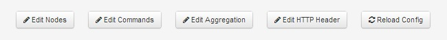
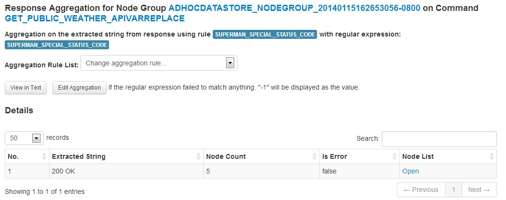
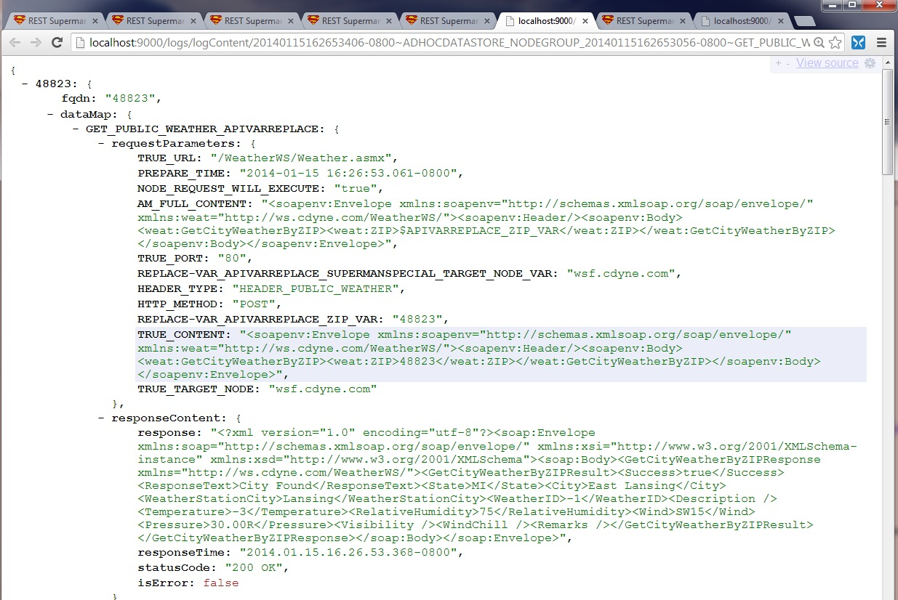

1. Overview
REST Commander is a parallel async http client as a service. It is scalable, fast, and able to conduct generic response aggregation and variable based replacement in requests. Commander can run commands via step by step wizard UI or powerful REST APIs Commander leverages the following libraries. If you are new to HTTP or RESTful/SOAP web service, here is a beginner's guide.
| Library | Description |
|---|---|
| Play Framework 1.2.4 | A Java MVC Framework with high performance netty based web server. |
| AKKA (in Java) | Actor Model Framework for simplifying thread pool management. Here we use it for sending parallel HTTP requests, aggregate and extract responses. |
| Async HTTP Client (NING) | Asynchronus HTTP Client. |
| Bootstrap 2.3 | Opensource CSS and frontend library. |
1.1 Notations
Important!: Please read this notation table before proceeding. Note that you can edit these configs both offline and online (while Commander is running).
Click this buttons in the middle of the "Home" page of Commander to start editing.
Notation Table
| Notation | Description |
|---|---|
| Command | A http request: have which port, URL, http header, if a post, what is the post content. A command can have the concrete payload or just a template with some parts as a variable. Then a replacement of the variable is possible when we need to send different actually http requests using the same "command template" when replacing the variable with different values. Commands are defined in a very simple format in agentcommand.conf |
| Node / Node Group | A node is normally a target server. Commander normally sends requests to multiple nodes, which is a node group. When sending to the same server, the node becomes a string that replaces the defined variable in command. Pre-define Nodes are defined in a very simple format in nodegroup.conf |
| Aggregation or Aggregation Rule | Normally means the regular expression. Why need this? When you get 1000 responses back, each response may be huge. But you are just interested in a specific value. Since each response is just a string, we use regular expression to generically extract the needed values out. Aggregations are defined in a very simple format in aggregation.conf. Just an id and then the regular expression. |
| HTTP Header Type | Http header type is a unique key string associated with a set of key, value pairs of http header values. Each command is associated with some HTTP header type. It is defined in httpheader.conf |
2. File structure
Commander source code are under the AgentMaster folder.
. ├── AgentMaster │ ├── adhoc_components │ ├── app │ ├── app_logs │ ├── app_logs_adhoc │ ├── app_logs_none_standard │ ├── conf │ ├── dev_notes │ ├── lib │ ├── public │ └── test ├── clean_application_pid_after_run_win.bat ├── eclipsify_application_win.bat ├── play-1.2.4 ├── README.md ├── start_application_linux.sh └── start_application_win.bat
In Configuration directory(/conf), the folder content looks as below. As Commander does not use database, the key configuration files are stored in this folder. All these configs can be changed offline or online with the edit config buttons in the Commander front page.
├── conf │ ├── actorconfig.conf │ ├── agentcommand.conf │ ├── aggregation.conf │ ├── application.conf │ ├── dependencies.yml │ ├── httpheader.conf │ ├── log4j.properties.production │ ├── messages │ ├── nodegroup.conf │ ├── notes.conf │ ├── routes │ └── wisbvar.conf
Important!: Read this key config table about these key configuration files before moving on.
Table of the Key Config Files.
| Config File Name | Description |
|---|---|
| agentcommand.conf | The list of pre-defined commands are defined here. Each command (HTTP request) will have a http header. Some variable can be defined in this conf too. |
| nodegroup.conf | The list of pre-defined node groups (target http servers) are defined here. The format is pretty straight forward |
| aggregation.conf | The list of pre-defined regular expressions for extracting strings. When mutliple repsonses come back, each response is basically a large string. We want to use the regular expression to extract the specific part that we are interested in. |
| httpheader.conf | The list of pre-defined http header types are defined here. Each http header type is with a set of htttp headers. Each command must associate with an HTTP header type. |
| application.conf | The key config in a play framework project. Also includes the parameters specific to REST Commander, such as the timeout and default max concurrency settings. Details please check here. |
| routes | The dispatcher in the MVC framework by Play. Which API to hit which controller. |
| actorconfig.conf | The config of AKKA actors settings. |
3. Commands
In Commander, the http request is called a "command". All commands are defined in "agentCommand.conf". It has a following structure. Defining a command is very simple. 2 lines define a command.
The Commands Page Sample:
3.1 Command Structure
We always have to use exactly two lines to define a new command. The 1st line format: commandID httpmethod requestProtocol requestPort requestUrlPostfix maxConcurrency responseExtractIndexStart responseExtractIndexEnd
Attention!: The maxConcurrency is a key parameter in the command. It indicates what is the maximum concurrent requests the Commander will perform. i.e., If this value is 100, that means Commander will not send the "n_th" request until it gets the "{n-100}_th" response back. e.g. The 500th request will not be sent until receiving the reponse from the 400th request. This helps to protect the target server when Commander is sending to the same target server; and also protects the machine running Commander from too much IO and socket load. If this value is 0 or negative: will use the default value of 1500 (defined as MAX_CONCURRENT_SEND_SIZE in application.conf
The 2nd line is the request body (data) when it is a POST or PUT. When you dont need the request body just put "$AM_FULL_CONTENT" (like a place holder). the ``` in the beginning of this line is just for formatting purpose; no real meaning.
Two sample commands are defined here. First command is a GET to /act/index.rss. The 2nd command is a POST call to a SOAP based Web service (a public WSDL on weather). Note that $APIVARREPLACE_ZIP_VAR is the variable to be replaced. To protect the public weather service server, the maxConcurrency is set as 20. Please be careful of setting this value and protect public service or you may be banned by the server.
GET_CRAIGSLIST_RSS GET http 80 /act/index.rss 0 0 5000 SUPERMAN_GLOBAL ```$AM_FULL_CONTENT %Call public WSDL web service; POST a SOAP (XML) object where the variable is the ZIP code GET_PUBLIC_WEATHER_APIVARREPLACE POST http 80 /WeatherWS/Weather.asmx 20 -1 -1 HEADER_PUBLIC_WEATHER ```<soapenv:Envelope xmlns:soapenv="http://schemas.xmlsoap.org/soap/envelope/" xmlns:weat="http://ws.cdyne.com/WeatherWS/"><soapenv:Header/><soapenv:Body><weat:GetCityWeatherByZIP><weat:ZIP>$APIVARREPLACE_ZIP_VAR</weat:ZIP></weat:GetCityWeatherByZIP></soapenv:Body></soapenv:Envelope>
Attention!: There are two types of variable replacement in commands. In form of $VAR and ${VAR}. $VAR is more important and a must to send different requests for different servers. While ${VAR} is optional to reduce multiple definition.
Table of Comparing $VAR vs ${VAR}
| Replacement Form | When | Motivation | Function | Location to Define the Replacement String to the Var |
|---|---|---|---|---|
| $VAR, with prefix: "$APIVARREPLACE_" | ${VAR} will be replaced in the last minute before sending out the request for enabling sending different requests to different servers. | This is a key feature! Used for run time replacement, a must for enabling sending different requests to different servers. | used for run time replacement: support both uniform replacement or server specific replacement. (different values for different nodes) | (1) in the REST API: replacement map; (2) in the single server wizard; (3) in the code or rest client to Commander. |
| ${VAR} | ${VAR} will be replaced at the time when this agentcommand.conf is loaded (normally during startup of application or a reload trigger) | This is optional. Goal is to make the definition in the agentcommand.conf looks nicer to reduce potential multiple same changes (like to remove magic numbers in the code) . Say when a value e.g. some software version appear in multiple commands, use this ${var} to define it in a single place. | uniform replacement only | in agentcommand.conf |
The Section in agentcommand.conf for defining ${VAR}: optional
%VARIABLES here are with ${VAR} will be first replaced here globally inside of this .conf file.
VARIABLES_PREDEFINED
```VARIABLES_PREDEFINED_LIST_START
${URL_VI}=/validateInternals.html
```VARIABLES_PREDEFINED_LIST_END
3.2 Edit/Add Http Headers
You may go to http://localhost:9000/config/editConfig/httpheader to edit the http header or just edit the httpheader.conf. In the example, the id is HEADER_PUBLIC_WEATHER, then the "```HTTP_HEADER_LIST_START" and "```HTTP_HEADER_LIST_END" tags; between these two are a list of http header key value pairs. Each key value pair uses two lines. And the 2nd line (which is the value) use the formatting string "```" (no meaning).
HEADER_PUBLIC_WEATHER ```HTTP_HEADER_LIST_START content-type ```text/xml;charset=UTF-8 ```HTTP_HEADER_LIST_END
4. Nodes
In Commander, the target server is called a "node". a "node group" is a set of target servers. We can fire commands to an ad hoc list of nodes or some pre-defined node groups. The pre-defined node groups are defined in nodegroup.conf. If you want to hit target nodes not pre-defined, you may leverage the rest APIs or the ad hoc command wizard; Or even extend the code to read from a centralized database or from an API (e.g. from a web url given a list of string in json).
The Node Page Sample: You can click the ID to get the json view and click on the button to get the domain name (FQDN) text line by line.
4.1 Sample Pre-defined Node Group
In the example, the type is ADHOC. The id is ADHOC_NODE_LIST_CRAIGLIST, then the "```ADHOC_NODE_LIST_START" and "```ADHOC_NODE_LIST_END" tags; betwen these two are a list of nodes. (Advanced feature for extension: you may add new data source type and dynamic loading nodes from a centralized databases or an API.)
ADHOC ADHOC_NODE_LIST_CRAIGLIST NA NA ```ADHOC_NODE_LIST_START sfbay.craigslist.org sandiego.craigslist.org losangeles.craigslist.org lansing.craigslist.org chicago.craigslist.org detroit.craigslist.org annarbor.craigslist.org newyork.craigslist.org saltlakecity.craigslist.org raleigh.craigslist.org phoenix.craigslist.org boston.craigslist.org houston.craigslist.org pittsburgh.craigslist.org honolulu.craigslist.org ```ADHOC_NODE_LIST_END
5. Aggregation
In Commander, the aggregation rules are used to extract the needed values out of the responses. They are just regular expressions (regex in short). The pre-defined aggregation rules are defined in aggregation.conf. New to regular expressions? Check the tutorial and cheatsheet.
Speical Aggregation Rules.: There are two special aggregation rules that does not come from the payload of the response: (1) SUPERMAN_SPECIAL_STATUS_CODE : aggregation on the HTTP response code. (2) SUPERMAN_SPECIAL_RESPONSE_TIME: aggregation on the response obtained time. The SUPERMAN_SPECIAL_STATUS_CODE is used as the default aggregation rule.
5.1 Aggregation Sample
In the example, two aggregation rules are defined. Each rule needs two lines. The first line is the ID, and the second line is the regular expression starts with the formatting string "```" (no meaning). The () indicates the part of string to be extracted. E.g. In the first rule is the part between the temperature.
Tip: The () indicates the part of string to be extracted.
PATTERN_WEATHER_WSDL_TEMPERATURE ```.*<Temperature>(.*?)</Temperature>.* PATTERN_VI_SERVER_HEALTH ```.*<td>Server-Is-Healthy</td>\s*<td>(.*?)</td>[\s\S]*
6. Timeout Settings
The timeout is a key value in any http requests and impact the performance. Check the bottom of application.conf to set them. Many times the performance is mostly impacted by the slowest servers and the stuck or dead ones with the timeout during the batch. We have levels of timeout of individual http request as in NING Async http client, and also at the actor level. (If the http client does not throw any error; it still can get stuck in rare occasions.)
We define two HTTP client, a fast client (default) and a slow client, any commend has a postfix of "SLOWNINGCLIENT" in command ID will auto use the slow client in the http requests.
Timeout is important!: Many times the performance is mostly impacted by the slowest servers and the stuck or dead ones with the timeout during the batch. Where to set timeout? in application.conf.
| Timeout | Description |
|---|---|
| NING_FASTCLIENT_REQUEST_TIMEOUT_MS | The default request timeout. Not just the connection. If the target server is CPU 100% probably the connection will succeed, but then got stuck. Currently: 15000 (milliseconds) |
| NING_FASTCLIENT_CONNECTION_TIMEOUT_MS | Time needed to connect with the server. Normally 1-2 second is sufficient. Currently: 4000 (milliseconds) |
| NING_SLOWCLIENT_REQUEST_TIMEOUT_MS | For the slow client. (commands by default will not use slow client) Currently: 120000 (milliseconds) |
| NING_SLOWCLIENT_CONNECTION_TIMEOUT_MS | For the slow client. (commands by default will not use slow client) Currently: 15000 (milliseconds) |
| ACTOR_MAX_OPERATION_TIME_SECONDS_DEFAULT | This timeout is when the async HTTP client (Ning) library does not throw exception but it still gets stuck. It should be set longer than the request timeout. Currently: 17 |
7. Wizards
In Commander, the wizards are great ways to add new user friendly UI to step by step to on demand fire requests to target servers. To access the wizards, check on the "Wizards" tab to view all available wizards: http://localhost:9000/wizards .
| Timeout | Description |
|---|---|
| Command to adhoc nodes | With ad hoc node list. Wizard for running pre-defined command to arbitrary new target nodes. |
| Command to a single server | With ad hoc String list. Wizard for running pre-defined command to a single server with arbitrary set of strings to replace a single variable in the command. |
| Command to Pre-defined Node Group | Wizard for any commands to predefined node groups. |
For the sample steps for the pre-defined node groups, it is available in the video and the Check 3 Servers Health example in "Get Started" page. Here we show a more complex wizard example when we need to send different requests to a single server. This corresponding to the use cases of Different Requests to Same Server in Use Cases page.
1. Input the list of values to replace the variable defined in the command. 95131, 95132, 95037, 48824, 48823
2. Input the command, the variable name, and the single target server. Here we replace the APIVARREPLACE_ZIP_VAR with the 5 zip codes. And the single target server is "wsf.cdyne.com".
3. Send requests.
4. After a couple of seconds, the responses return. The "Response data" show the raw JSON responses. "Aggregation" gives the table based view of aggregation with regex; "Aggregation in text" gives the text based view of aggregation with regex. Now the responses are not only in the memory but also saved as text json log files in the disk. You may view the "Response logs" to view them too.
5. You may continue to check on the next section of "Response Analysis and Logs" to continue to view the responses aggregation and logs with this example.
8. Response Analysis and Logs
Logs: For each command, when the responses from the target nodes come back, the request and response pair for all nodes are automatically stored in (1) a hashmap in memory; (2) json text files for further investigations. You can click them to (1) Download: view the raw json. or (2) Aggregation using a regular expression in either html table or raw text
You can check logs on the pre-defined node group is via http://commanderhost/logs; while for the ad hoc node group is via url http://commanderhost/logs/adhocLog. Here is a screenshot of the adhoc log page.

The Icon buttons have the following functions.
| Icon | Description |
|---|---|
| Download the raw json logs of the hashmap of the request and response pairs. (not using regular expression aggregation rules). | |
| Show the aggregation tables: which nodes have which values. You may (1) easily change the aggregation rule; (2) click on the column of "Node List" to obtain the corresponding list of nodes that share the extracted string. | |
| The text / json version of the aggregation after using the aggregation rule (regular expression) Default regular expression is :SUPERMAN_SPECIAL_STATUS_CODE. Note that this is URL addressable. So you can change the URL to change the regular expression. |
1. Click give you the raw data.
2. Click give you the table view after the regular expression aggregation
Tip: You may change the aggregation rule (regular expression) by clicking on the "Change aggregation rule...". Like here we want to use the "Temperature" regular expression to aggregate:
Tip:You man click on the "Open" in the "Node List" Column in the table to get the nodes have this value. Note that this is URL addressable too. e.g.: http://localhost:9000/agents/aggregateMetaDataNodeList?nodeGroupType=ADHOCDATASTORE_NODEGROUP_20140115162653056-0800&agentCommandType=GET_PUBLIC_WEATHER_APIVARREPLACE&value=-3&timeStamp=20140115162653406-0800&rawDataSourceType=LOG_FILE&aggrRule=PATTERN_WEATHER_WSDL_TEMPERATURE
Tip: Add Back Pie Chart Visualization: We originally have a pie chart view besides the table view with the Highcharts library. We removed it due to potential license issues. If you use sueprman for non-commercial purpose, you may want to restore the pie chart visualization. The data for feeding the pie chart has been passed to the frontend. Please check detailed instruction on the source code at /views/Agents/aggregatePieChart.html
3. Click : for get a text view after the regular expression aggregation
Here are some sample log names and how to access them.
// Logs for predefined node group 20140114134629472-0800~ADHOC_NODE_LIST_CRAIGLIST~GET_CRAIGSLIST_RSS.jsonlog.txt Access: http://localhost:9000/logs/logContent/20140114134629472-0800~ADHOC_NODE_LIST_CRAIGLIST~GET_CRAIGSLIST_RSS.jsonlog.txt // Log for ad hoc node group 20140113164841803-0800~ADHOCDATASTORE_NODEGROUP_20140113164841433-0800~GET_PUBLIC_WEATHER_APIVARREPLACE.jsonlog.txt
9. Scheduled (Cron) Jobs
In Commander, you can run commands to target nodes ondemand through wizards or REST APIs, or on a scheduled time via cron expression (e.g. every hour). In the application.conf, you can set cron jobs (scheduled jobs) agentmaster.cronjob.run=true; then, you can check the source code sample: ScheduledJobSample.java under AgentMaster/app/jobs. For more information, please check Play Framework Scheduled jobs and Cron Expressions
The key part inside of Commander to run jobs on predefined node group is as follows:
String nodeGroupType = VarUtils.NODEGROUP_CONF_NODEGROUP_ADHOC_NODE_LIST_TOP100WEBSITES;
String agentCommandType = VarUtils.AGENT_CMD_KEY_GET_FRONT_PAGE;
AgentCommandProvider.generateUpdateSendAgentCommandToNodeGroupPredefined(nodeGroupType,
agentCommandType);
10. Advance Settings
Additional features and settings are listed in the following table. Some common configs are at http://localhost:9000/commands/common (assuming Commander is running on localhost:9000).
| Setting | Description | URL |
|---|---|---|
| Explore Files | Like a simple online file browser. Discover the archived log files. | http://localhost:9000/logs/exploreFiles |
| System Health | Commander run a system check on JVM memory, threads, and disk space every 5 minutes. You can check the result in the right bottom part in Home page or the url /monitor | http://localhost:9000/monitor ; http://localhost:9000/monitor/threads ; http://localhost:9000/monitor/disk |
| Config Page | Many config options including editing the .conf file online; clear all data in memory (all the request/response hashmaps), | http://localhost:9000/config |
| VarUtils.java | Many more parameters are set in this file under models.utils | N/A |
11. REST APIs and REST Client
In Commander, you can not only run commands via web user interface or wizards; you can also run via the REST APIs and rest client. Detail examples please check Use Cases page.
For more details about the REST APIs, The request and response JSON are mapped to the corresponding JAVA class in package models.rest.beans.requests and models.rest.beans.responses. For the response not aggregated case: the response is a JSON dump of Map [String, NodeData]
For how the REST request/response are processed: check Commands.java in controller: Check the following 2 functions (1) genUpdateSendCommandWithReplaceVarMapAdhocJson() and (2) genUpdateSendCommandWithReplaceVarMapNodeSpecificAdhocJson()
12. Production Mode
The default Commander is running in "Develop" mode which has lower performance and using single thread for handling http request. If you want to deploy Commander into Production, please just use the application.conf.master/slave in the conf folder to overwrite the application.conf. The different of master/slave is the whether to run cron job. Details of Play Framework project deployment please check here.